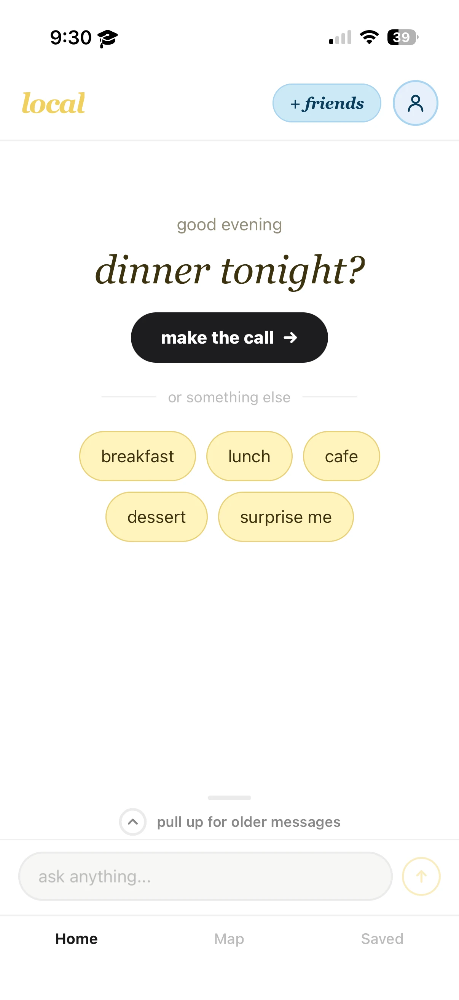
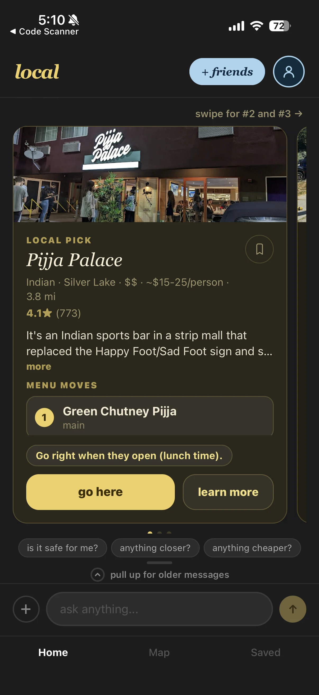
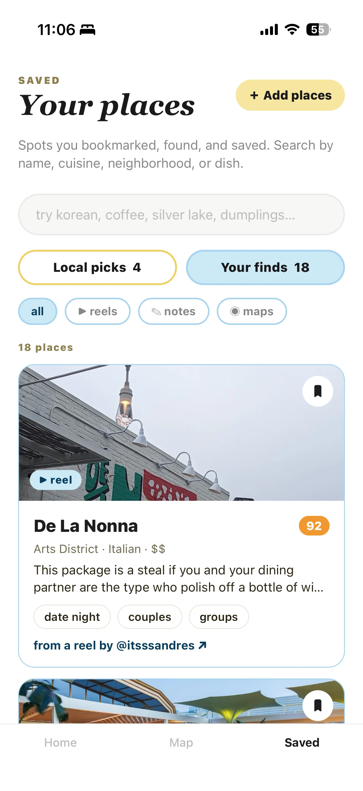

hi, I’m Navya
Product manager who ships.
I’m the only PM at Ren, an AI startup that helps managers with hard conversations at work. I take things from a customer problem to shipped, and I design the screens myself.
selected work
Four projects. Open any card for the full story, every screen and the reasoning behind it.
-

Our biggest customers kept saying the same three things, so I redesigned the desktop and mobile app around them, and designed every screen myself.
-

I rebuilt the marketing site and reworked how Ren explains itself. Free-trial signups surged afterward, opening a second way in.
-



An AI app that answers “where should we eat?” with one confident pick, built from what critics, locals and creators say.
-
Three problems I found early at two security startups, and how each one got fixed.
Listen
Design
Ship
I’m the product manager at Ren, an AI tool that helps managers with hard conversations at work. I’m the only PM, so I end up doing a bit of everything. Mostly that’s been talking to customers, redesigning the desktop and mobile app, and working closely with engineering to get it shipped.
I recently finished my Master’s in Cybersecurity Engineering, along with my Bachelor’s in Economics and Data Science at USC. I like understanding how systems actually work, then turning messy, ambiguous problems into something concrete you can ship.
Before Ren I was on the product team at Spin.AI, a SaaS security startup, and before that in product ops at Quantech in Mumbai. In both places a lot of the work was noticing what was broken before users did and getting it fixed. I’m also still building Local, an AI app that gives hyper-local restaurant recommendations from sources like reviews and creator content.
- Now
- Product Manager at Ren, since July 2026
- Where
- New York
- School
- USC, MS Cyber Security Engineering (2026) and BA Economics and Data Science (2025)
- Tools I design and build with
- Pencil, Claude Code, React Native, Postgres, SQL, Python
- Jul 2026 – nowRen, Product Manager. Sole PM across discovery, design, launch and go-to-market.
- Mar 2026 – nowLocal, solo builder. AI restaurant recommendations, RAG on pgvector, Claude API.
- Sep 2025 – Jun 2026Spin.AI, Product Management Intern. Partner controls feature, account switching, 100+ security control mappings.
- Jun – Aug 2025Quantech Datascience, Product Operations Intern. Caught a data separation gap and a silent OCR failure before launch.
- May – Jul 2024IREP Credit Capital, Data Analyst Intern. SQL tracker across 1,000+ loan accounts.
- Aug 2023 – May 2025USC, Teaching Assistant for Object-Oriented Programming.